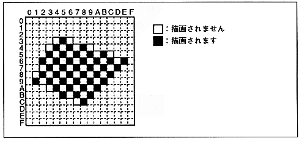
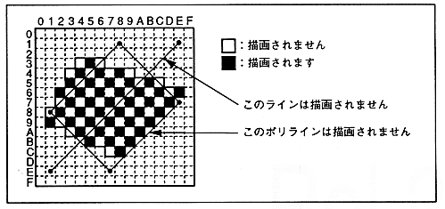

Mesh | Mesh enabled |
0 | Draw without mesh processing |
1 | Draw with mesh processing |
∙ When mesh processing is specified (Mesh = 1), parts are drawn in a grid pattern every other pixel. Only pixels whose X coordinate value + Y coordinate value is even (XLSB XOR YLSB = 0) are drawn, and odd-numbered pixels are skipped and not written.
∙ If the start point of the 45 degree line is an odd coordinate, nothing is drawn. Even if it is a polyline with an odd coordinate at 45 degrees, it may not be drawn.
Figure 6.8 Mesh processing

Figure 6.9 Mesh processing of lines and polylines
